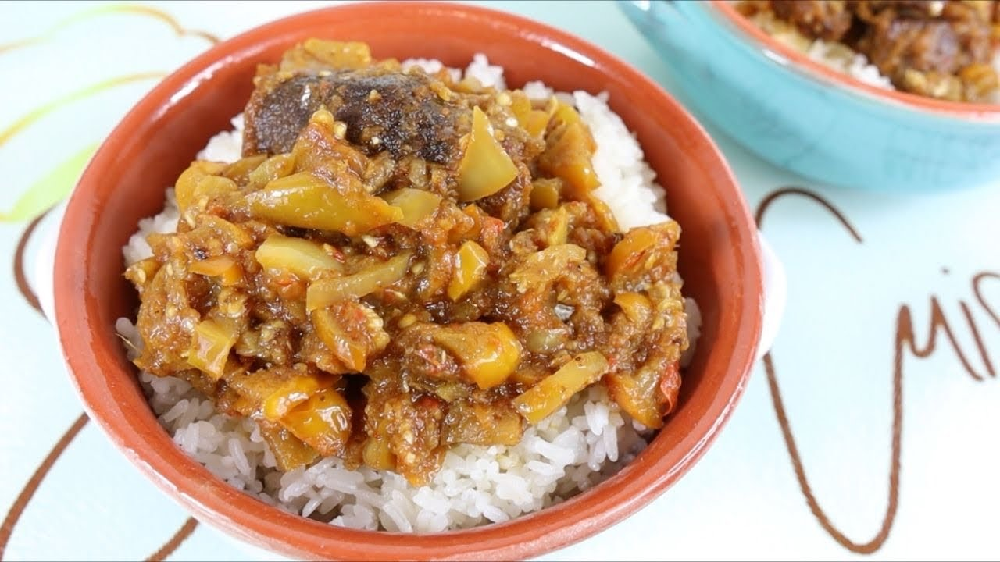

.png)

Le drapeau du Burkina Faso est composé de deux bandes horizontales égales de rouge en haut et de vert en bas, séparées par une bande centrale jaune. Au centre de la bande jaune se trouve un disque rouge avec un épi de mil vert et deux branches de kapok blanc, symbolisant respectivement l'unité, la progrès, et la révolution. Adopté en 1984, ce drapeau incarne les valeurs et l'identité du Burkina Faso, reflétant son engagement envers l'unité, la justice sociale, et le développement.
La capitale du Burkina Faso est Ouagadougou. Située au centre du pays, Ouagadougou est le centre politique, économique et culturel du Burkina Faso. Elle est la plus grande ville du pays et abrite plusieurs institutions gouvernementales, des ambassades, des universités, ainsi que des marchés animés et des sites culturels. La ville joue un rôle central dans la vie nationale et est un important centre urbain dans la région ouest-africaine.
La langue officielle du Burkina Faso est le français. Cette langue est utilisée dans les domaines de l'administration, de l'éducation, des médias et des communications gouvernementales. Bien que le Burkina Faso soit caractérisé par une diversité linguistique importante avec plusieurs langues locales parlées, le français demeure la langue officielle et est utilisé comme moyen de communication au niveau national.
La monnaie du Burkina Faso est le franc CFA (Communauté Financière Africaine). Le franc CFA est utilisé dans plusieurs pays d'Afrique de l'Ouest et d'Afrique centrale, tous membres de la zone franc CFA. Ces pays partagent une monnaie commune, qui est émise par deux institutions monétaires différentes : la Banque Centrale des États de l'Afrique de l'Ouest (BCEAO) pour les pays de l'Union Économique et Monétaire Ouest-Africaine (UEMOA), dont fait partie le Burkina Faso, et la Banque des États de l'Afrique Centrale (BEAC) pour les pays de la Communauté Économique et Monétaire de l'Afrique Centrale (CEMAC).
La population du Burkina Faso était estimée à environ 21 millions d'habitants. Cependant, veuillez noter que les chiffres de la population peuvent évoluer au fil du temps en raison de divers facteurs tels que la croissance démographique, les migrations et d'autres changements démographiques.
Le Burkina Faso était dirigé par le Président Roch Marc Christian Kaboré. Il est entré en fonction le 29 décembre 2015 et a été réélu pour un second mandat lors des élections présidentielles de novembre 2020.
Le Burkina Faso fonctionne sous un régime politique de type république. Cela signifie que le président est à la fois le chef de l'État et le chef du gouvernement. Le pouvoir exécutif est exercé par le président, qui est élu au suffrage universel, et son gouvernement. Le Burkina Faso a adopté une constitution qui établit les principes démocratiques et définit la séparation des pouvoirs entre l'exécutif, le législatif et le judiciaire. Le Parlement, composé de l'Assemblée nationale, est l'organe législatif du pays. La république du Burkina Faso est engagée dans la promotion des valeurs démocratiques et des droits de l'homme.
Le Burkina Faso, ancré dans sa diversité culturelle, célèbre plusieurs fêtes nationales et culturelles tout au long de l'année. La Fête de l'Indépendance, le 5 août, réunit les Burkinabè dans des défilés animés, des événements festifs et des cérémonies patriotiques, commémorant le jour où le pays a accédé à la souveraineté en 1960. La Fête de la Révolution, le 4 août, rappelle le coup d'État de Thomas Sankara en 1983, mettant en avant des activités patriotiques honorant cette période marquante de l'histoire politique du Burkina Faso. La Journée du Travailleur, le 1er mai, célèbre les droits des travailleurs à travers le pays. Le Carnaval de Ouagadougou, généralement en février ou mars, offre une explosion de couleurs, de danses et de musique dans les rues de la capitale. En outre, les célébrations de Tabaski (Aïd el-Kébir) unissent les communautés musulmanes dans des festivités marquant des moments importants de la vie religieuse. Ces fêtes reflètent la riche identité culturelle et les traditions du Burkina Faso, offrant aux Burkinabè l'occasion de célébrer ensemble et de préserver leur héritage.
Ce plat consiste en du riz préparé avec de la viande, généralement du poulet ou du bœuf, et agrémenté de légumes tels que des tomates, des oignons et des poivrons. Les ingrédients sont mijotés ensemble dans une sauce savoureuse, donnant au riz une saveur délicieuse. 
Le Tô est une sorte de bouillie épaisse faite à partir de farine de mil, de sorgho ou de maïs. Il est souvent accompagné d'une sauce d'aubergine, préparée avec des aubergines grillées, des tomates, des oignons et des épices. Ce plat est une option populaire dans la cuisine burkinabè.
La poterie est une autre expression artistique importante. Les potiers burkinabè créent une variété de produits, y compris des jarres, des bols et des ustensiles domestiques. La poterie traditionnelle est souvent caractérisée par des formes organiques et des motifs gravés, reflétant les compétences artistiques et les techniques transmises de génération en génération.